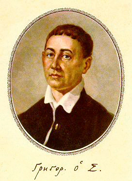

Хто такий Сковорода

Джерело: Wikimedia Commons (Овальний портрет Г. Сковороди, автор невідомий)
Григорій Савич Сковорода — український філософ, поет, педагог і композитор доби бароко. Він народився на Полтавщині, вчився в Києво-Могилянській академії, а в зрілі роки відмовився від кар’єри й понад двадцять років мандрував Слобожанщиною, навчаючи людей і записуючи свої думки.
Головна ідея Сковороди проста й досі актуальна: щаслива людина — та, що пізнала себе і займається справою, до якої має природний хист. Він називав це «сродною працею».
Цікаві факти
- Мандрував пішки, з собою носив лише Біблію, сопілку й кілька рукописів.
- Грав на скрипці, флейті, бандурі та гуслах, писав музику до власних віршів.
- За життя його твори майже не друкували — вони поширювалися в списках, які переписували від руки.
- Епітафію «Світ ловив мене, та не спіймав» він сам попросив написати на своїй могилі.